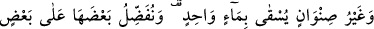

O ALLAH Kİ…
Rahman ve Rahîm olan Allah’ın adıyla.
1. Elif. Lâm. Mîm. Râ. Bunlar, Kitab’ın âyetleridir. Rabbinden sana indirilen
haktır, fakat insanların çoğu inanmazlar.
2. Gökleri görebileceğiniz bir direk olmadan yükselten, sonra Arş’a istivâ eden,
güneşi ve ayı emrine boyun eğdiren Allah’tır. (Bunların) her biri muayyen bir vakte
kadar akıp gitmektedir. O, Rabbinize kavuşacağınıza kesin olarak inanmanız için
her işi düzenleyip âyetleri açıklamaktadır.
3. Yeri döşeyen, onda oturaklı dağlar ve ırmaklar yaratan ve orada bütün
meyvelerden çifter çifter yaratan O’dur. Geceyi de gündüzün üzerine O örtüyor.
Şüphesiz bütün bunlarda düşünen bir toplum için ibretler vardır.
4. Yeryüzünde birbirine komşu kıtalar, üzüm bağları, ekinler, bir kökten ve çeşitli
köklerden dallanmış hurma ağaçları vardır. Bunların hepsi bir su ile sulanır. (Böyle
iken) yemişlerinde onların bir kısmını bir kısmına üstün kılarız. İşte bunlarda
akıllarını kullanan bir toplum için ibretler vardır.
“Biz ona şiir öğretmedik. Zâten ona yaraşmazdı da.” (Yâsin, 36/69) âyetiyle ilgili
olarak Şeyh Muhyiddin İbnü’l-Arabî (k.s.) şöyle der: